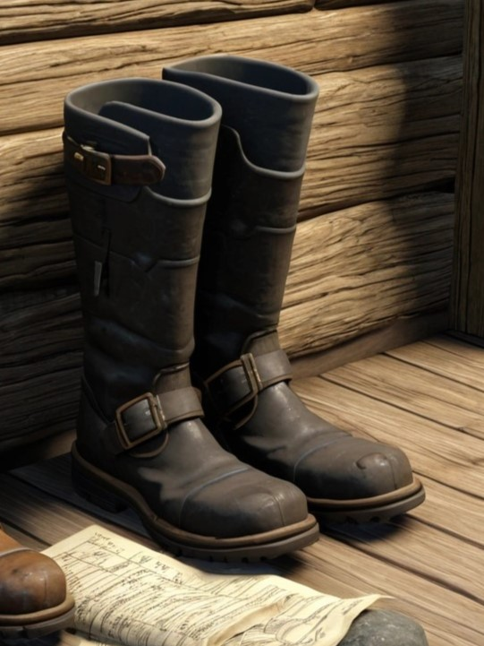

Characters
Michael Shophaet

This text is forced to align to the left.
Son of a renowned landowner. He has never left the region surrounding Fidelium. His greatest passion is working the soil he will one day inherit.He is down to earth, though his manner of speech tolerates little nonsense and pursues the truth relentlessly. Because of his candor, swift action must often follow his words.
Recent rumors have made it even to his ears. Someone has to do something about it. "Do I need to be that someone?"
Kaila Keruah
Daughter of the Prefect of Fidelium, her chief duties is that of messenger of her father.
She excells as a diplomat and has expansive knowledge of Ionia's history and geography. Some have remarked that her intelligence gathering abilities are unmatched, except for that of her mother.
Ordered, fulfills her tasks, but has a particularly soft heart for animals.
Occasionally wonders, "What else is meant for me in this world?" Then picks up her lyre before she can get an answer.
She excells as a diplomat and has expansive knowledge of Ionia's history and geography. Some have remarked that her intelligence gathering abilities are unmatched, except for that of her mother.
Ordered, fulfills her tasks, but has a particularly soft heart for animals.
Occasionally wonders, "What else is meant for me in this world?" Then picks up her lyre before she can get an answer.
Jaakob Keruah
Son of the Prefect of Fidelium. Trained for 7 years at the Police Academy in Sperata.
He is kind-natured and contemplative, but his training has set him on a different path.
Some burning, aching question nags at the back of his mind. "That part of me that I locked away...why has it begun to resurface?"